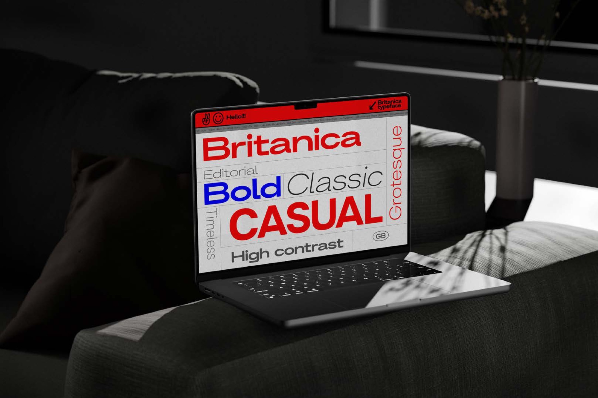
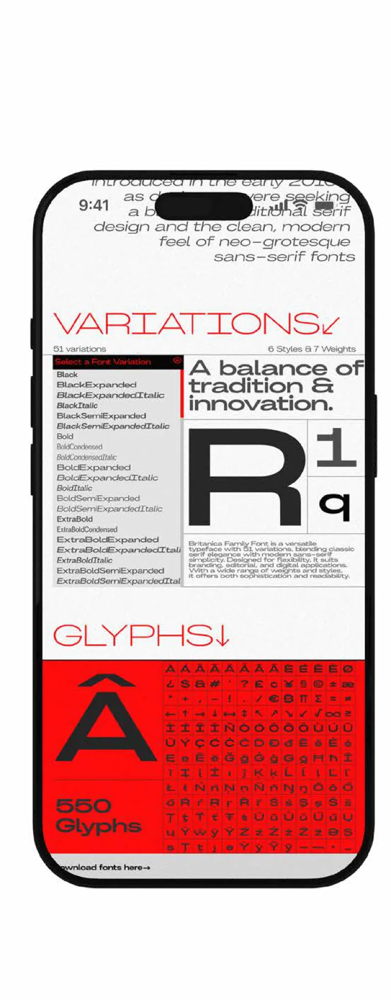
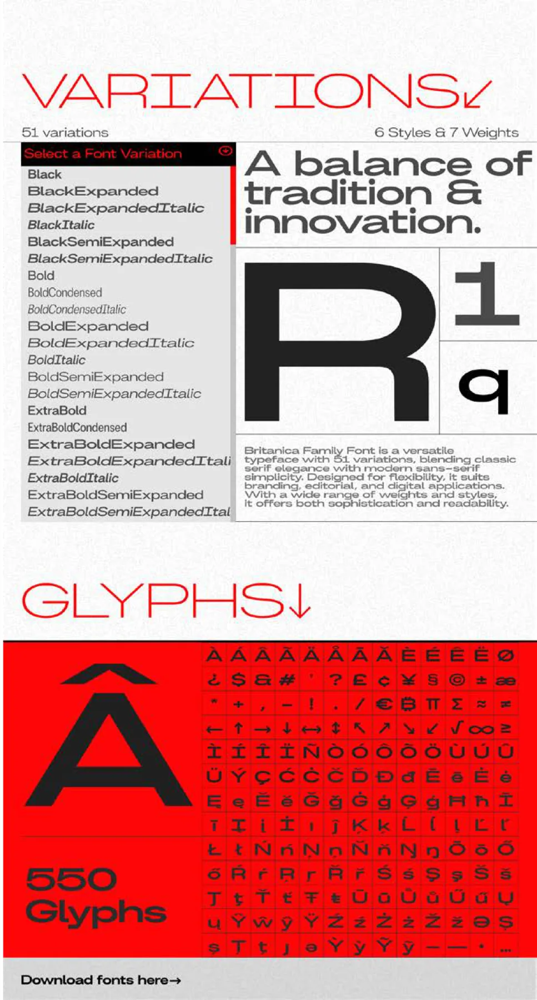
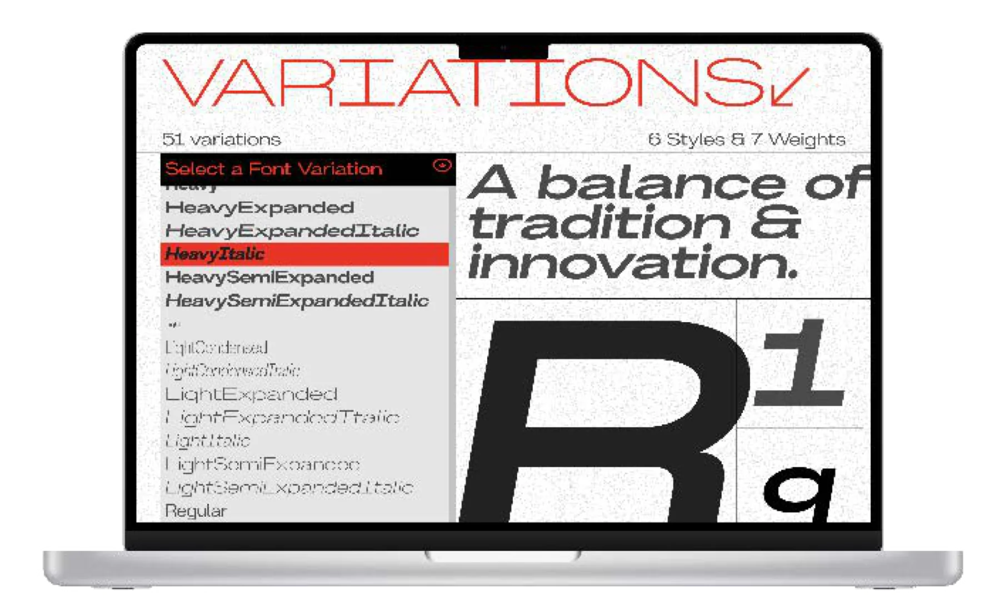
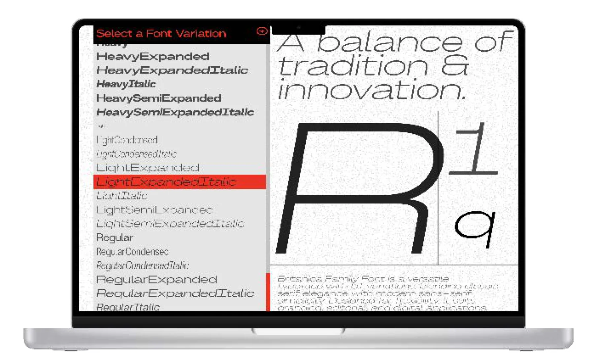

PHAM Nhu Quynh
Contact
PHAM Nhu Quynh
Contact
Type Specimen WebsiteResponsive & Interactive Design · Urban, Modern, Industrial Aesthetic
Figma
Site spécimen typographiqueDesign responsive et interactif · Esthétique urbaine, moderne et industrielle
Figma
Britanica Type Specimen WebsiteSite spécimen typographique
ChoiceChoix
I chose the Britanica font with an urban, modern, industrial style to reflect a strong, contemporary look inspired by city and industrial aesthetics.
J’ai choisi la Britanica pour son style urbain, moderne et industriel, afin d’affirmer une allure forte et contemporaine, inspirée de la ville et de l’esthétique industrielle.


Brief
Project is about designing a type specimen website that showcases a font with a visually appealing interface matching the font’s characteristics. It should be responsive for both desktop and mobile, with interactive animations in the prototype.
Le projet consiste à concevoir un site spécimen qui présente une typographie à travers une interface attrayante, fidèle au caractère de la fonte. Le site devait être responsive, sur ordinateur comme sur mobile, avec des animations interactives dans le prototype.
Mobile and desktop screensÉcrans mobile et ordinateur




Site contentContenu du site
Hero: “Britanica — Editorial, Bold, Classic, CASUAL, Grotesque, Timeless, High contrast”. “Welcome to the world of Britanica typeface”.
Hero : « Britanica — Editorial, Bold, Classic, CASUAL, Grotesque, Timeless, High contrast ». « Welcome to the world of Britanica typeface ».
About: the Britanica typeface was created by Nikita Platonov, a Russian type designer, as part of a project to provide a modern serif typeface with a focus on legibility, clarity, and versatility; first introduced in the early 2010s.
À propos : la Britanica a été créée par Nikita Platonov, dessinateur de caractères russe, dans le cadre d’un projet visant à proposer une typographie serif moderne axée sur la lisibilité, la clarté et la polyvalence ; elle a vu le jour au début des années 2010.
Variations: 51 styles & 7 weights — “A balance of tradition & innovation.” Glyphs: 550 glyphs.
Variations : 51 styles et 7 graisses — « A balance of tradition & innovation. » Glyphes : 550 glyphes.